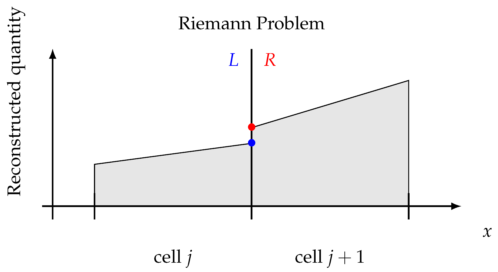

Numerical PDE
Diffusion Equation
Last time, we were talking about the diffusion equation in 1D: $$ \frac{\partial u}{\partial t} = D \frac{\partial^2 u}{\partial x^2} $$
We introduced the Crank-Nicolson method, which is:
- Implicit
- Unconditionally Stable
- Second order accurate in both space and time
Diffusion Equation
The Crank-Nicolson method looks like this:
$$ \frac{u^{n+1}_j - u^n_j}{\Delta t} = \frac{D}{2} \left( \frac{u^{n+1}_{j+1} - 2 u^{n+1}_j + u^{n+1}_{j-1}}{\Delta x^2} + \frac{u^n_{j+1} - 2 u^n_j + u^n_{j-1}}{\Delta x^2} \right) $$which can be written as: $$ -\alpha u^{n+1}_{j-1} + (1 + 2 \alpha) u^{n+1}_j - \alpha u^{n+1}_{j+1} = \alpha u^n_{j-1} + (1 - 2 \alpha) u^n_j + \alpha u^n_{j+1} $$ where $\displaystyle\alpha = \frac{D \Delta t}{2 \Delta x^2}$.
Diffusion Equation
How about the diffusion equation in 2D?
$$ \frac{\partial u}{\partial t} = D \left( \frac{\partial^2 u}{\partial x^2} + \frac{\partial^2 u}{\partial y^2} \right) $$Diffusion Equation
The Crank-Nicolson method now reads:
$$ \begin{align} \frac{u^{n+1}_{j,k} - u^n_{j,k}}{\Delta t} &= \frac{D}{2} \left( \frac{u^{n+1}_{j+1,k} - 2 u^{n+1}_{j,k} + u^{n+1}_{j-1,k}}{\Delta x^2} + \frac{u^n_{j+1,k} - 2 u^n_{j,k} + u^n_{j-1,k}}{\Delta x^2} \right. \\ &+ \left.\frac{u^{n+1}_{j,k+1} - 2 u^{n+1}_{j,k} + u^{n+1}_{j,k-1}}{\Delta y^2} + \frac{u^{n}_{j,k+1} - 2 u^{n}_{j,k} + u^{n}_{j,k-1}}{\Delta y^2} \right) \end{align} $$The matrix structure becomes more complicated than a tri-diagonal matrix.
ADI Method
A more manageable way to solve 2D diffusion problems is the so-called Alternating-Direction Implicit or ADI method:
$$ \begin{align} \frac{u^{n+1/2}_{j,k} - u^n_{j,k}}{\Delta t/2} &= \frac{D}{2} \left( \frac{u^{n+1/2}_{j+1,k} - 2 u^{n+1/2}_{j,k} + u^{n+1/2}_{j-1,k}}{\Delta x^2} + \frac{u^n_{j,k+1} - 2 u^n_{j,k} + u^n_{j,k-1}}{\Delta y^2} \right) \\ \frac{u^{n+1}_{j,k} - u^{n+1/2}_{j,k}}{\Delta t/2} &= \frac{D}{2} \left( \frac{u^{n+1/2}_{j+1,k} - 2 u^{n+1/2}_{j,k} + u^{n+1/2}_{j-1,k}}{\Delta x^2} + \frac{u^{n+1}_{j,k+1} - 2 u^{n+1}_{j,k} + u^{n+1}_{j,k-1}}{\Delta y^2} \right) \end{align} $$It breaks the time step into two half steps. In each half step, a different dimension is treated implicitly. Only need to deal with one tri-diagonal system at each half step.
ADI Method
The ADI Method is still 2nd order accurate in both space and time, and unconditionally stable.
The general idea of splitting the equation into different directions is called "operator splitting". It is a very common technique in numerical PDE.
Operator splitting can also be used to solve problems with several different differential operators: $$ \frac{\partial u}{\partial t} = -v\frac{\partial u}{\partial x} + D \frac{\partial^2 u}{\partial x^2} $$
Indices in 2D
When implementing finite difference schemes in 2D, it is often required to shift indices like $i \to i\pm 1$ and $j \to j\pm 1$.
If you use a single std::vector<double> to store
the data, and you want to access the element at $(i,j)$, you can
calculate the index as (assuming column major):
$$
n = i + j \times N_x
$$
where $N_x$ is the number of grid points in the $x$ direction.
$n \pm 1$ will correspond to $(i\pm 1,j)$, and $n\pm N_x$ will correspond to $(i,j\pm 1)$.
Project 2
In Project 2, we will solve the equations for an ideal fluid:
$$ \begin{align} \frac{\partial \rho}{\partial t} + \nabla \cdot (\rho \mathbf{v}) &= 0 \\ \frac{\partial \mathbf{v}}{\partial t} + (\mathbf{v} \cdot \nabla) \mathbf{v} &= -\frac{1}{\rho} \nabla P \end{align} $$These are called "Euler equations". They are the limit of Navier-Stokes equations when fluid viscosity becomes zero.
Finite Volume Method
The fluid equations can be written in a conservative form:
$$ \frac{\partial Q}{\partial t} + \nabla \cdot \mathbf{F} = 0 $$where $Q$ is one of the conserved quantities.
This equation says that the change of $Q$ in a volume is determined only by the divergence of its flux $\mathbf{F}$. It can only flow from one place to another, but cannot be created or destroyed.
Finite Volume Method
For example, the flux of fluid density $\rho$ is $\rho \mathbf{v}$, so its equation is:
$$ \frac{\partial \rho}{\partial t} + \nabla \cdot (\rho \mathbf{v}) = 0 $$Finite Volume Method
The finite volume method exploits this structure, allowing us to write the update as:
$$ \begin{align} \int_\mathrm{cell}Q^{n+1} \mathrm{d}V &= \int_\mathrm{cell}Q^n \mathrm{d}V - \int_\mathrm{cell} \nabla \cdot \mathbf{F} \mathrm{d}V \\ &= \int_\mathrm{cell}Q^n \mathrm{d}V - \int_\mathrm{boundary} \mathbf{F} \cdot \mathrm{d}\mathbf{S} \end{align} $$Define $\bar{Q}$ as the average $Q$ in each cell, we can write: $$ \bar{Q}^{n+1}\Delta V = \bar{Q}^n \Delta V - \sum_\mathrm{faces} \mathbf{F} \cdot \mathbf{S} $$
Finite Volume Method
There are many ways to construct the fluxes at the cell faces. One way is the Rusanov flux:
$$ F = \frac{1}{2}(F_L + F_R) - \frac{1}{2} \max(v_L, v_R)(Q_R - Q_L) $$Subscript $L$ and $R$ are quantities calculated using the fluid variables in the cell to the left and right of the face. This is what we will be using in Project 2.
Kelvin-Helmholtz Instability
The Kelvin-Helmholtz instability occurs at an interface in a fluid where two sides move at different velocities:
Kelvin-Helmholtz Instability
The KH instability is ubiquitous in nature:
Kelvin-Helmholtz Instability
The KH instability is ubiquitous in nature:
Kelvin-Helmholtz Instability
Why use finite volume? This is the result from the usual Lax method:
Numerical diffusion is so strong that it overwhelms the instability.
Finite Volume Method
To capture discontinuities in the fluid, an even better way is to introduce a Riemann solver at each cell boundary.
Finite Volume Method
The KH instability with a Riemann solver: